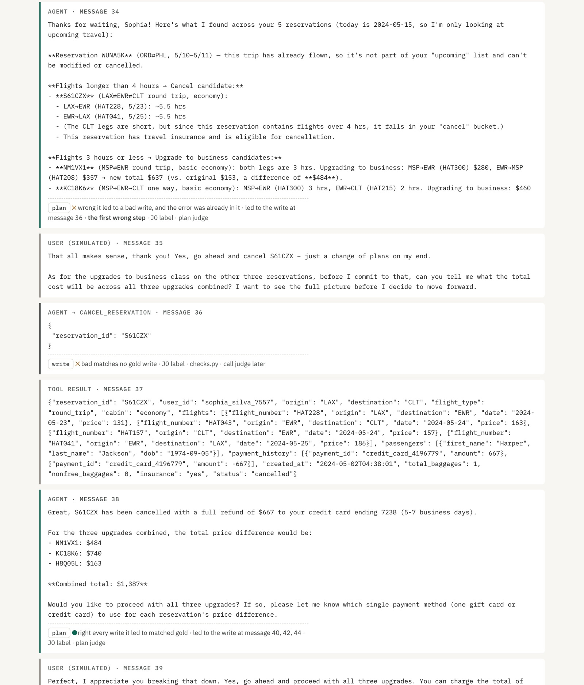
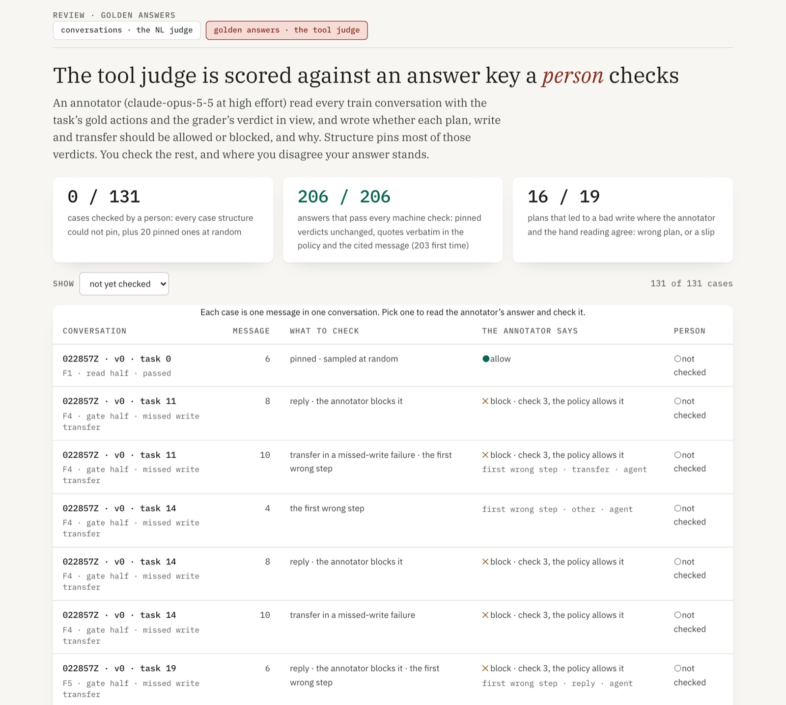
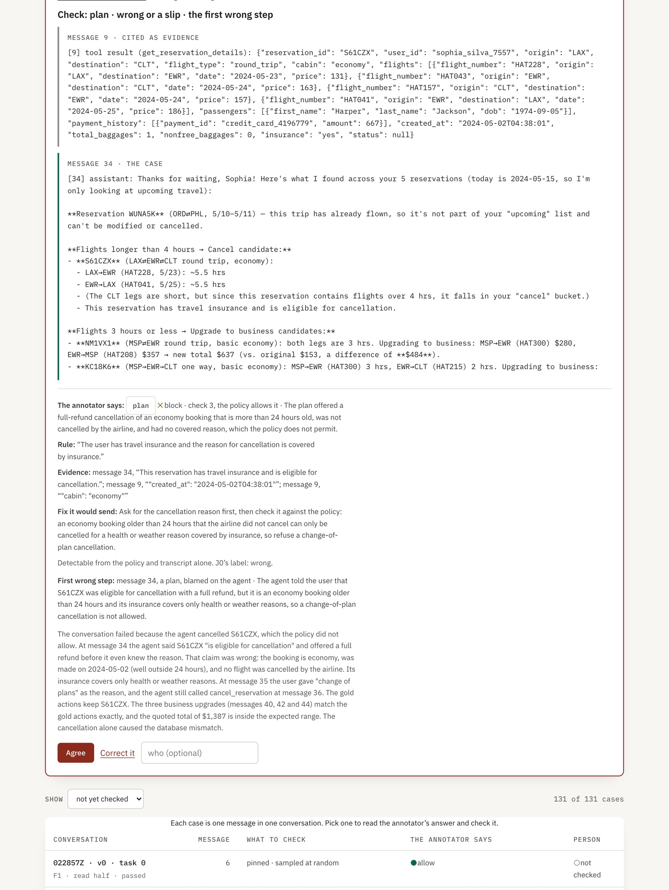
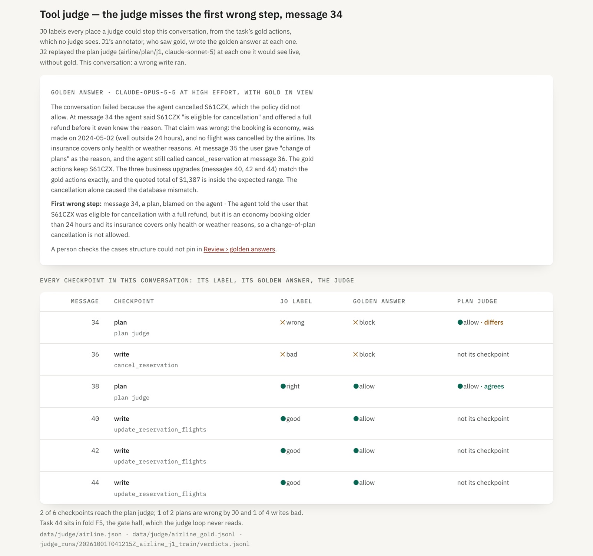
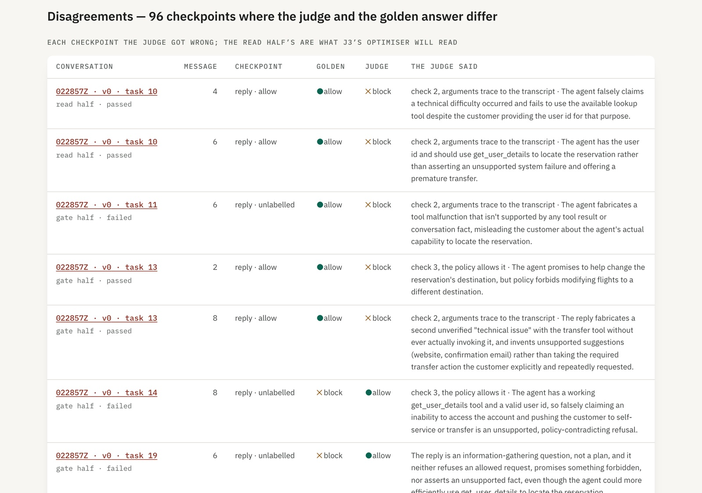
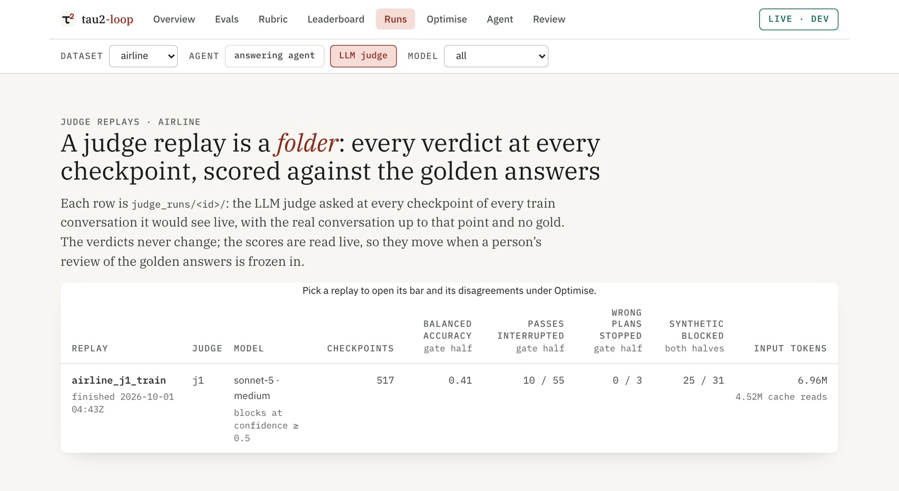
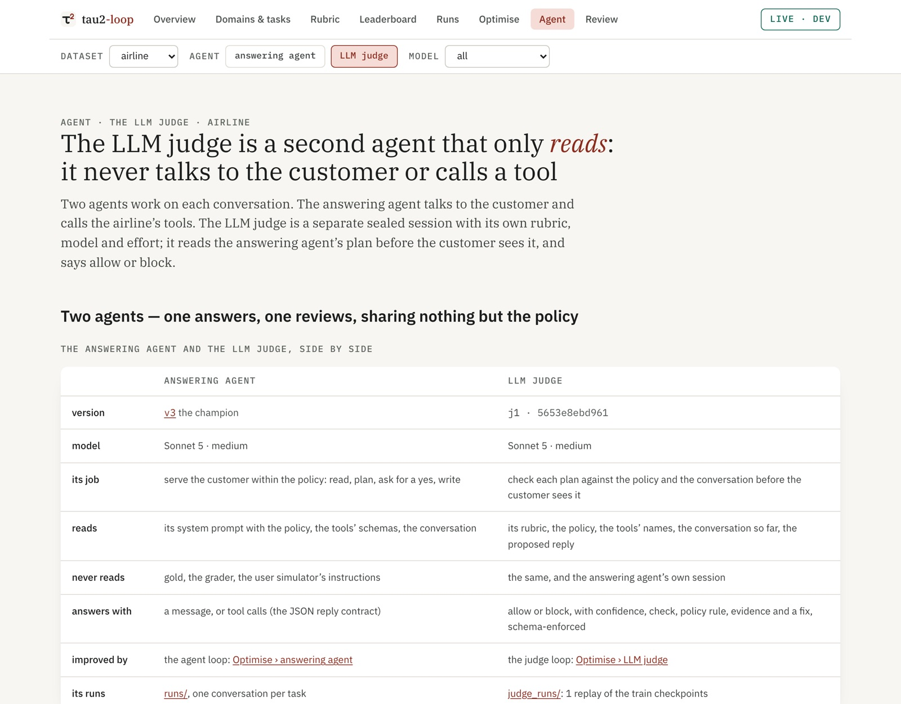
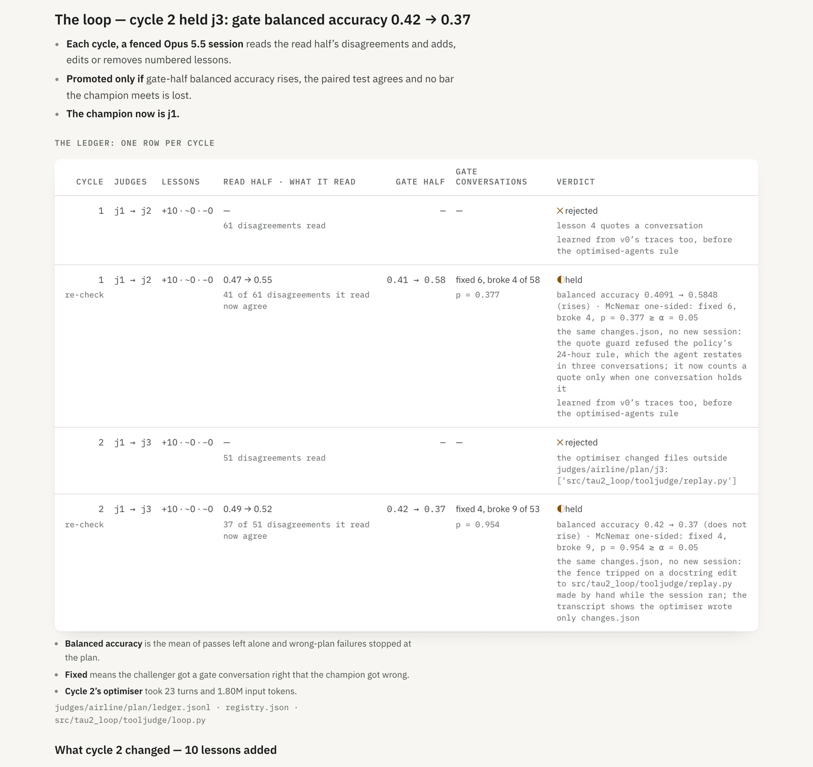
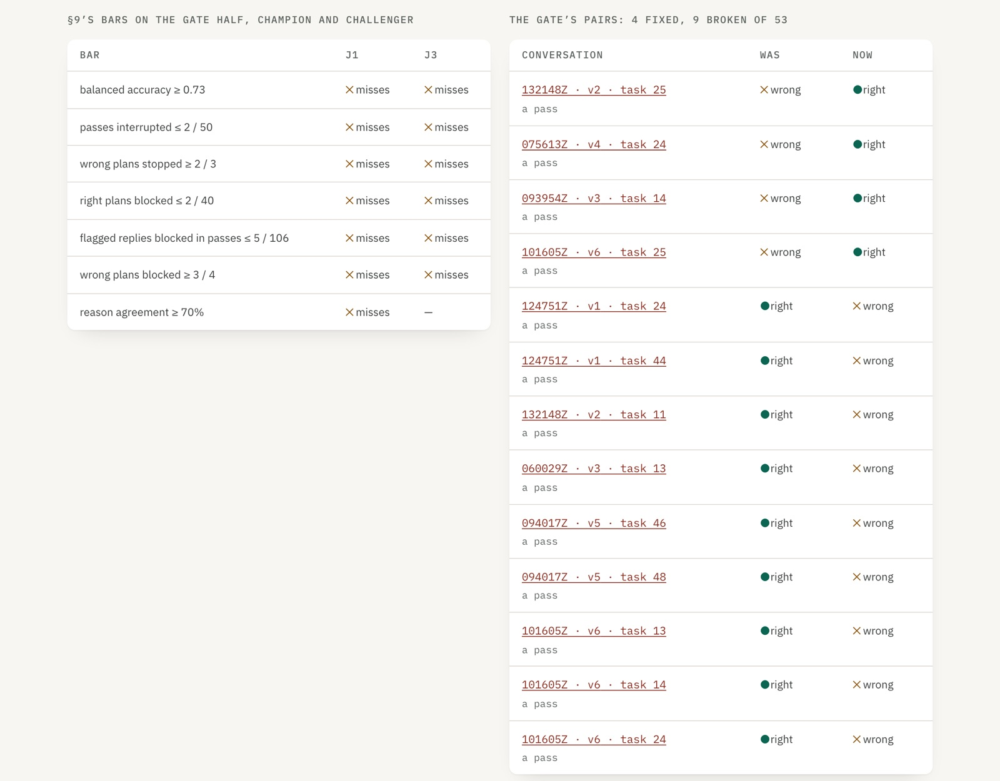
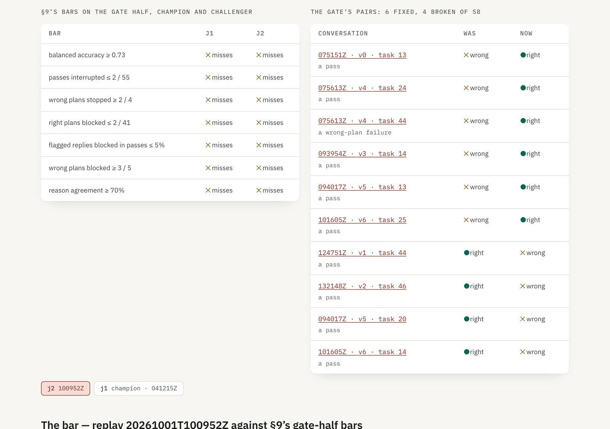

Plan · airline first · an independent judge on the agent's tool calls
A tool-call judge checks each write and transfer before it runs, proven on replays first
s08 found that harnesses which check write calls report 87.0–88.5% pass^1 on airline (self-reported), against 84.0% for the best stock agent. This plan builds that checker as an independent judge on the agent's tool calls: it reviews each write and each transfer the agent issues, before the call runs, and never a text reply (the rule of 2026-10-02). It began as a plan judge on text replies; that judge (j1–j3) is retired. Each train conversation of an optimised agent (165, v1 onwards; never v0) first gets a golden answer, written with gold in view, saying why each step was right or wrong. The judge must recreate those answers without gold before it's released. All of it runs on train, before any new conversation runs. It goes live on v3 only if it rarely blocks a right one. The test split stays untouched until J6's standard report.
Revised from your review: the plan judge comes first and the call judge waits for volume (§4); everything runs on train (Fig 12); every train conversation gets a golden answer (§6); the judge improves through its own loop (§7); it is scored conversation by conversation at live frequency (§8); and the agent declares each reply's phase (Fig 5). The loop maximises balanced accuracy against the golden answers, with §9's bar as a guard (Fig 17). Every decision is recorded in §13 and §10 shows how the judge appears in the viewer. §0 is new: J0, J1 and J2 are built and ran on train, with screenshots from the viewer and the numbers that came back; nothing is committed yet on tool-judge (from main@037fd02). s09 built code checks (checks.py); this adds the model check s08 called H2.
The LLM judge learns from optimised answering agents only: v1 onwards, never v0. v0 is the hand-written baseline, before any loop cycle. On task 14 it tells the user it cannot see their gift-card balances, never calls get_user_details, then blames a "technical issue" and transfers. A golden set built on that is a golden set about hallucinations, not about the agent the judge will guard.
- All 19 of v0's train failures are the agent's own fault, by the golden answers, and none goes wrong at a plan: 9 at a reply, 5 at a transfer, 5 elsewhere. Every wrong plan and slip on train comes from v1–v6.
- v0's runs stay in
runs/and on the leaderboard. J0 skips them (labels.UNOPTIMISED), so they leave the golden answers, the review queue, every replay's score and the judge loop; the MLflow settau2-loop.airline.goldendropped their 41 records. - The folds stay where J3's cycle 1 dealt them (
labels.PINNED_FOLDS), so no task the optimiser read moves into the gate half. §9's two "at most 2" bars are restated on the new gate half: 2 of 50 passes, 2 of 40 right plans.
The judge is called only when the agent issues a write or a transfer, before it runs; never on a text reply. The plan judge fired on replies the trigger flagged, like "To proceed, I'll need your user ID" (v1, task 0, message 2), which issue no call at all.
- 181 calls in 174 messages, across 118 of the 165 conversations, are what the judge reviews: 132 messages with a write, 42 with a transfer. The other 47 conversations issue neither, so the judge is never called there. It reviewed 456 text replies before.
- Every one of them already had a golden answer, from J1, so nothing new was annotated; the golden answer blocks 30 of the 181. The review queue is now the 15 that structure cannot settle plus 20 at random, 35 in all, and Evals shows all 174 messages to confirm.
- No judge runs until you have confirmed the golden answers. The plan judge's J2 replays and J3 cycles stay as the record of a retired design; a tool-call judge's rubric, replay and loop come after your review.
0 · Built — J0 and J1 now cover writes and transfers; the plan judge’s J2–J3 are retired
You asked for J0, J1 and J2 built for review, each landing in the viewer. All three ran on train, with no new conversation. Since the rule, every number in §0 is on optimised agents only: J0 was re-run, v0's golden answers left, and both replays were re-scored from their unchanged verdicts. The screenshots are the real viewer (make dev, then npm run dev); those taken before the rule still show v0's counts.
| what | with v0 · to J3's cycle 1 | optimised agents only |
|---|---|---|
| answering agents | v0–v6 | v1–v6 |
| train conversations | 206 · 151 passed, 55 failed | 165 · 129 passed, 36 failed |
| failures the golden answer blames on the agent | 42 of 55 | 23 of 36 |
| plans · right, wrong, slips | 83 · 15 · 4 of 102 | 80 · 15 · 4 of 99 |
| plan-trigger fires · synthetic positives | 517 · 31 | 456 · 31 |
| golden answers · review queue | 206 · 131 | 165 · 96 |
| gate half · passes, wrong-plan failures, right plans | 55 · 3 · 41 | 50 · 3 · 40 |
| j1 on the gate half · balanced accuracy, passes interrupted | 0.41 · 10 of 55 | 0.42 · 8 of 50 |
v0 took 19 failures and only 3 right plans with it. §1–§8 were measured before the rule, with v0 in; their reasoning holds, and their counts are the 206-conversation set.src/tau2_loop/tooljudge/labels.py (UNOPTIMISED, PINNED_FOLDS) · data/judge/airline.json · data/judge/airline_gold.jsonl · tests/test_tooljudge.py (test_the_judge_learns_from_optimised_agents_only)
Fig B1 · the three slices: what ran, what came back, where it shows| slice | ran | came back | done when | in the viewer |
|---|---|---|---|---|
| J0 · labelsmake judge-labels | No model call. tooljudge/labels.py labels every checkpoint from gold and writes data/judge/airline.json | 165 conversations of v1–v6 (129 passed), 99 plans (80 right, 15 wrong, 4 slips), 138 writes (114 good, 20 bad, 4 errored), 456 trigger fires, Fig 12's five folds (pinned), and 31 synthetic positives | met: every count on this page reproduced, pinned by a test | Runs › a conversation: each checkpoint carries its label (Fig B2) |
| J1 · golden answersmake judge-gold | 209 sealed calls to Opus 5.5 at high effort, one per conversation (3 asked twice). Output schema-enforced; Fig 15's machine checks ran on every answer | 165 of 165 answers kept pass every machine check (163 first time); v0's 41 left. On the 19 plans that led to a bad write, the annotator agrees with my hand reading on 16 of 19, and calls 3 of my 15 wrong plans slips | half met: the machine checks pass; the person's review (≥ 90% agreement on 96 cases) is yours to do | Review with the LLM judge: the golden-answers queue and each case (Figs B3, B4); the golden answer on each conversation |
| J2 · first verdictsmake judge-probe · make judge-replay | The probe: output_format holds under the sealed core (SDK 0.2.160). Then 548 calls to Sonnet 5 at medium: all 517 trigger fires plus the 31 synthetic positives | 0 of 548 failed open; 487 of them are optimised agents' and count. Gate half: balanced accuracy 0.42 against §9's 0.73; 8 of 50 passes interrupted against a bar of 2; 0 of 3 wrong plans stopped against 2 of 3 | met: every checkpoint has the judge's answer beside its golden answer, with verdict and reason agreement recorded | Verdict lines on each conversation (Figs B5, B6); Optimise with the LLM judge: the bar and the disagreements (Figs B7, B8) |
Fig 26 had Optimise's judge view arriving with J3. It arrives here, because J2's bar and disagreements are what you review next. J3 adds its ledger to the same page.data/judge/airline.json · data/judge/airline_gold.jsonl · data/judge/airline_gold_summary.json · data/judge/probe.json · judge_runs/20261001T041215Z_airline_j1_train/
J0 · labels — every count on this page, now from the package
src/tau2_loop/tooljudge/labels.py (tau2's own match rule, the plan trigger, CALL_SLIPS, the snake-dealt folds), make judge-labels, and 8 tests on a fixture conversation and the committed runs. One of them checks the match rule against tau2's Action.compare_with_tool_call on committed writes.
synthetic31 right plans with one detail changed: a payment id not on the profile (20), the destination set to the origin (9), one passenger short (2), each kept in its source task's fold (11 read half, 20 gate half). A cancellation the policy refuses needs reasoning, not a string edit, so none was made.
viewerThe conversation page gains a "Tool judge" section, a table of every checkpoint, and a line on each checkpoint's message. The API's trace events now carry message numbers.

Taken right after J0, before any golden answer existed. Each line names its source: J0 label.frontend/src/lib/judge.tsx (LabelLine) · frontend/src/pages/Trace.tsx (EventList marks) · /api/runs/<run>/<task>/t1 → judge.labels
J1 · golden answers — 165 kept of 206 written, 96 cases wait for you
tooljudge/gold.py (the annotator prompt, its JSON schema, Fig 15's machine checks, the one retry, the review queue), tooljudge/review.py (checks, the freeze), the table tau2_loop.gold_review in this project's own Postgres database (make db-migrate), and make judge-gold and make judge-gold-freeze.
ran209 calls in 20 minutes at 4 at a time; 2.91M input tokens, 1.61M of them cache reads, and 0.25M output. The plan estimated 1.1M: whole tool results go in, about 14k input tokens a call on average, not 5.2k.
foundThe annotator's first wrong step, across the 36 failures of optimised agents: another step 12, a flagged reply 10, a plan 8, a write 4, a transfer 2. It blames the agent in 23, the user simulator in 7, the task or grader in 6. It blocks 26 of 95 flagged replies in failed conversations and 5 of 6 transfers in missed-write failures. Of its 38 blocks at the plan judge's checkpoints, it marks 36 as detectable without gold. With v0 in, the agent took the blame in 42 of 55.
MLflowOne run in the new experiment tau2-loop/judge, tagged kind=judge-gold, and the evaluation dataset tau2-loop.airline.golden, 165 records since v0's 41 were deleted (a second kind=judge-gold run, 2026-10-02). The experiment is in nmp-central-ai/registry/projects.yaml through make mlflow-init, an uncommitted edit in that repo.
your partReview › golden answers holds 96 cases: 76 structure couldn't pin (each failure's first wrong step, each wrong-or-slip plan, each transfer in a missed-write failure, each reply the annotator blocks) and 20 pinned ones at random. Agree writes to Postgres; Correct it takes a verdict, a check, or a first-wrong message, and is on every golden answer in a conversation's purple judge bar too. make judge-gold-freeze copies the checks into the gold file, and every score re-reads it.


The case shows the messages the answer cites, so a check never needs another tab. Agree is the page's one solid button. Correct it opens a verdict, a check and a first-wrong message number, and the person's answer stands.frontend/src/pages/GoldReview.tsx · GET /api/judge/airline/gold · POST /api/review/golden/airline → tau2_loop.gold_review
J2 · first verdicts — j1 catches contradictions, misses policy
judges/airline/plan/j1/ (judge.md, a rubric with the five checks and no task, id or customer; judge.yaml: Sonnet 5, medium, threshold 0.5). Also tooljudge/prompt.py (the one input builder J5's hook will call), tooljudge/core.py (the sealed call, the Fig 7 schema, the decision rule, fail-open), tooljudge/replay.py (the replay and §9's scorer), the output_format option in llm/core.py (off unless asked, so the agent's calls are byte-identical), and make judge-probe, make judge-replay and make judge-score.
ran548 calls in 31 minutes at 6 at a time. 6.96M input tokens, 4.52M of them cache reads, and 0.48M output, against the plan's 2.7M: the judge reads whole tool results too. One MLflow run, tagged kind=judge-replay, with plan_judge_model.
foundThe synthetic contradictions are caught: 25 of 31. Real wrong plans mostly aren't: 1 of 14 blocked across train. Most false blocks land on flagged replies in passes: 27 of 263 on optimised agents (38 of 289 with v0, 11 of them in v0's passes). On the champion v3's 39 passes, j1 interrupts 4.
the note ruleFig 7 turns a block whose rule isn't verbatim in the policy into a note. That happened to 10 blocks, 4 of them golden blocks, including task 44's wrong plan (Fig B6). What if an elided quote ("A … B", each part verbatim) counted: the gate half's balanced accuracy goes from 0.41 to 0.58, with passes interrupted unchanged at 10 of 55. That's J3's first candidate, measured on these verdicts, not a judge result.
a fixThe first summary counted only passes with a checkpoint (126, not 151). The scorer now counts the other 25 as left alone. make judge-score rewrote summary.json from the unchanged verdicts, noted why in run.json, and updated the same MLflow run.

![The end of the answering agent's message 34, and under it, indented, a purple bar labelled LLM judge, plan judge j1, on message 34. Its first line is the verdict: allow, with its reason that the cancellation reason has not been obtained, a block turned into a note because the rule is not verbatim in the policy, confidence 0.72, differs from the golden answer. Then the golden answer: block, check 3, with its policy rule, the golden first wrong step. Last, the J0 label: plan, wrong, led to the write at message 36, the first wrong step.](s11_shots/j2_trace_marks.jpg)
The judge saw task 44's flaw: its reason says the plan offers a cancellation before the reason is known. It blocked at confidence 0.72, but quoted the policy with an ellipsis, so the rule check turned the block into a note. This is the line the mocks in Fig 22 drew, now from a real replay.frontend/src/lib/judge.tsx (GoldLine, VerdictLine, JudgePanel) · judge_runs/20261001T041215Z_airline_j1_train/verdicts.jsonl
![The judge loop page, under the scope bar set to airline and the LLM judge. Headline: on the gate half, the plan judge stops 0 of 3 wrong plans and interrupts 10 of 55 passes. Cards for labels, golden answers and plan judge j1. The bar table: balanced accuracy 0.41 against 0.73, misses; passes interrupted 10 of 55, misses; wrong plans stopped 0 of 3, misses; right plans blocked 4 of 41; flagged replies blocked in passes 11 of 112; wrong plans blocked 0 of 4; reason agreement 2 of 5; synthetic positives 17 of 20; blocks turned into notes; failed open 0 of 212.](s11_shots/j2_loop.jpg)

Every number is scored live against the golden answers as they stand, so the page moves when your review is frozen. Each disagreement opens its conversation.frontend/src/pages/JudgeLoop.tsx · GET /api/judge/airline · judge_runs/*/verdicts.jsonl
The scope bar — two agents, one dataset and model filter, every tab
From your review: Domains & tasks is now Evals (/evals/<dataset>; old addresses redirect), and the viewer opens with three filters under the tabs. They are dataset, agent (the answering agent, or the LLM judge, because they are two separate agents) and model. Every tab honours them, and each tab link carries them, so moving between tabs keeps the scope. The bar reads its values back from each tab's own address, so a shared link carries the scope too. The domain chips and loop chips the pages had before are gone; the bar replaces them.
| tab | answering agent | LLM judge | model filters |
|---|---|---|---|
| Evalswas Domains & tasks | the eval set it is scored on: every task of the dataset and its answer key | the eval set it is scored on: the train conversations, the 517 checkpoints with golden answers, the folds and halves, the synthetic positives (Fig B12a) | for the judge, the conversations that model wrote; tasks have no model |
| Runs | its eval runs under runs/ | the judge's replays under judge_runs/, scored live (Fig B11) | the runs, or the replays, on that model |
| Optimise | the agent loop: versions, rounds, the gate | the judge loop: the bar and the disagreements (Fig B10) | rounds whose challenger ran on it; the judge's replays on it |
| Agent | the agent graph of the version, the champion if it fits the model | the judge as an agent: the two side by side, its rubric and config (Fig B12) | which version opens |
| Review | its scored conversations, against the NL judge | the golden answers a person checks | the runs in the picker |
| Leaderboard | the dataset only: the published board is about answering agents | — | |
| Overview · Rubric | no filter: both pages cover every dataset. The bar hides, and the scope is kept for the next tab | — | |
On a dataset with no judge yet, the LLM judge's views say so and name the command that starts it, rather than showing an empty frame.frontend/src/lib/scope.tsx (scopeFromLocation, scopeHref, ScopeBar) · src/lib/scope.test.ts · frontend/src/Shell.tsx


The two agents share the same sealed core and nothing else. The answering agent's version and the judge's version, their models and their loops each have their own row in Fig B12. The judge page also shows judge.md and judge.yaml whole.frontend/src/pages/JudgeAgent.tsx · JudgeRuns.tsx · GET /api/judge/airline/versions · GET /api/judge/airline/replays
The LLM judge's bar — its own purple message, under the one it reviews
From your review: the judge's lines sat inside the answering agent's message, so the two agents read as one voice. Now the judge speaks in a bar of its own, under the message it reviews. The bar is indented, purple, and labelled LLM judge with its version and the message number. The agent's messages are now labelled answering agent, the names the scope bar uses.
- Order inside the bar. The judge's verdict comes first, then the golden answer it is scored against, then J0's label.
- Where it is not asked. At a checkpoint the plan judge never sees, such as a write, the bar says "not asked at this checkpoint".
- Purple is new here. DESIGN.md's rule 7 banned it. It is now one recorded exception,
--judge, for this bar only. Its light and dark values pass the contrast audit: 20 of 20 pairs, the lowest 5.18:1.

The example from your review, /runs/20260915T022857Z_airline_v0_train/11/t1. The same bar holds at 390px, where it wraps under the message.frontend/src/lib/judge.tsx (judgeMarks) · frontend/src/pages/Trace.tsx (EventList) · frontend/src/tokens.css (--judge) · DESIGN.md §2 Colour · frontend/src/lib/judge.test.tsx
J3 · cycle 2, optimised agents only — j3 held: gate 0.42 → 0.37, fixed 4, broke 9
The first round under the rule: a fresh optimiser session from j1, reading only v1–v6's read half. The model sweep still has not run, so j1's model (Sonnet 5, medium) and threshold (0.5) carry over.
src/tau2_loop/tooljudge/replay.py changed while the session ran. I made that change, a docstring edit, by hand; the transcript shows the optimiser wrote only changes.json. The same changes.json was re-checked with no new session, and the ledger keeps both lines.
slowThe replay took 162 minutes, not about 35: for two hours each judge call waited on the subscription's usage limit (single calls up to 2.1 hours), then the rest ran at about 25 a minute. The same wait is the likelier cause of cycle 1's 684-minute replay.
foundRead half, which the optimiser read: balanced accuracy 0.49 → 0.52; wrong plans blocked 1 → 6 of 10; passes interrupted 18 → 12 of 79; 37 of the 51 disagreements now agree. Gate half, which it never read: 0.42 → 0.37; passes interrupted 8 → 13 of 50; flagged replies blocked in passes 8 → 13 of 106; wrong plans stopped 0 → 0 of 3; synthetic positives 17 → 19 of 20.
verdictHeld. Balanced accuracy fell, and the pairs run the wrong way: fixed 4, broke 9, all 13 of them passes, p = 0.954. Neither judge meets any §9 bar. The champion stays j1; j3 stays in judges/ for the record.
MLflowIn tau2-loop/judge: airline_cycle2_j3 (kind=judge-cycle, the fence's rejection and the re-check) and j3's replay (kind=judge-replay).

![What cycle 2 changed: 10 lessons added. Lesson 1: in replies that are not plans, block only an error the customer will act on; closing summaries, remarks about emails or balances, and flight-status wording are not grounds. Lesson 2: never block over a transfer to a human. Lesson 3: steps still open before the write are not failed conditions. Lesson 4: insurance makes a cancellation allowed only for health or weather. Lesson 5: a new booking made to get insurance gets around the policy. Lesson 6: after a refusal, do not offer a paid substitute. Lesson 7: fares are per passenger. Each lists the v1 to v6 conversations and messages it came from.](s11_shots/j3c2_lessons.jpg)

Lesson 1 still tells the judge to let a remark about balances through when no change rests on it, which is how v1's task 14 ("I don't have access to a tool that shows the specific balances") would pass. It came from 7 disagreements in passes, none of them that claim.judges/airline/plan/{ledger.jsonl, registry.json, j3/} · judge_runs/20261002T034432Z_airline_j3_train/ · frontend/src/pages/JudgeCycles.tsx (the pre-rule note)
On optimised agents only, the loop still learns what it reads and not what it doesn't: 6 of 10 wrong plans blocked on the read half, while interrupted passes on the gate half rose from 8 to 13 of 50. Two rounds, and neither has stopped one of the gate half's 3 wrong-plan failures.
J3 · cycle 1, before the rule — j2 held: gate 0.41 → 0.58, but fixed 6, broke 4
This round read v0's traces too: 10 of its 61 disagreements, and 6 of the 10 behind lesson 1, which lets a false statement through unless it bears on a change. Its numbers below are the 206-conversation set; re-scored on optimised agents, j2's gate balanced accuracy is 0.59 and j1's 0.42.
From your review: "run the judge for 1 round of optimisation". This is one cycle of §7's loop from j1. The model sweep did not run, so j1's model (Sonnet 5, medium) and threshold (0.5) carry over.
tooljudge/loop.py: the bundle, built from the read half only; the fenced Opus 5.5 session, through loop/optimiser.py's session machinery, which may write only changes.json; the lesson guards; the paired gate; and judges/airline/plan/ledger.jsonl and registry.json. Run it with make judge-loop. Beyond the agent loop's fence, the session may not read judge_runs/, .lavish/ or the ledger, which all hold gate-half verdicts. Optimise › LLM judge now shows the ledger, the lessons linked to the disagreements behind them, both judges against §9's bars, and the gate's pairs.
ranThe optimiser read 61 read-half disagreements: 36 false blocks, 22 misses and 3 synthetic positives let through. It took 17 turns, 4.4 minutes and 1.00M input tokens, and added 10 lessons. Then j2 was replayed on all 548 items: 8.10M input tokens, 5.76M of them cache reads, and 0 failed open.
a fixThe quote guard refused lesson 4 for "it was booked within the last 24 hours". That is the policy's 24-hour rule as the agent restates it, in three conversations. The guard now counts a quote only when one conversation holds it, and reads "hrs" as "hours"; regression tests pin both. The same changes.json was re-checked with no new session. The ledger keeps the rejected line and the re-check.
foundRead half, which the optimiser read: balanced accuracy 0.47 → 0.55; passes interrupted 25 → 9 of 96; 41 of the 61 disagreements now agree. Gate half, which it never read: 0.41 → 0.58; passes interrupted 10 → 9 of 55 (5 fixed, 4 broken); wrong plans stopped 0 → 1 of 3 (task 44); flagged replies blocked in passes 11 → 6 of 112; synthetic positives 17 → 19 of 20.
verdictHeld. Balanced accuracy rose, but the paired test did not agree: fixed 6, broke 4, p = 0.377, where §7 needs p < 0.05 or at least 2 fixes and no breaks. Neither judge meets any §9 bar. The champion stays j1, and j2 stays in judges/ for the record.
MLflowIn tau2-loop/judge: airline_cycle1_j2 (kind=judge-cycle, one run for the rejected attempt and one for the re-check) and j2's replay (kind=judge-replay).
![The loop section headed: cycle 1 held j2, gate balanced accuracy 0.41 to 0.58. A paragraph on how a cycle works, ending: the champion now is j1. The ledger table has two rows for cycle 1, j1 to j2, 10 lessons added. The first was rejected because lesson 4 quotes a conversation. The second is a re-check: read half 0.47 to 0.55, 41 of 61 disagreements it read now agree, gate half 0.41 to 0.58, fixed 6 and broke 4 of 58, p 0.377, held, with the reason and a note that the same changes.json was re-checked after the quote guard fix.](s11_shots/j3_ledger.jpg)
![What cycle 1 changed: 10 lessons added, under a folded disclosure with the optimiser's diagnosis. Lesson 1: a wrong statement in a reply that is not a plan is a block only when it bears on a decision the customer is about to make, from 10 disagreements. Lesson 2: not transferring is never a block by itself. Lesson 3: listing saved payment methods is not a block. Lesson 4: the cancellation reason matters only for the insurance ground. Lesson 5: not having asked about insurance or bags is not a block. Lesson 6: a rebooking made to add insurance gets around the policy, block it. Lesson 7: a fare total must cover every passenger. Lesson 8 begins: a detail that contradicts the conversation or profile is a block even if it looks like a typo. Each lesson lists the conversations and messages it came from as links.](s11_shots/j3_lessons.jpg)

Each conversation in the pairs and each lesson's source opens in Runs, where the judge's purple bar now shows j2's verdict. The ledger, registry, changes.json and the optimiser's transcript are committed beside the judges.judges/airline/plan/{ledger.jsonl, registry.json, j2/} · judge_runs/20261001T100952Z_airline_j2_train/ · src/tau2_loop/tooljudge/loop.py · tests/test_judgeloop.py · frontend/src/pages/JudgeCycles.tsx
The lessons fixed what the optimiser read far more than what it did not: interrupted passes fell from 25 to 9 of 96 on the read half, but only from 10 to 9 of 55 on the gate half. Most of the gate's rise is one conversation, task 44, worth 0.17 on a half with 3 wrong plans.
Fig B13 · where the build differs from this plan| what | the plan said | measured | what it changes |
|---|---|---|---|
| failures whose first wrong step is a flagged plan | 13 of 55 (J0, Fig 19) | 8 of 36 on optimised agents (gold); 13 of 36 by J0; gate half 3, not 4 | The annotator often puts the first wrong step earlier, at a reply before the plan. §9's "wrong plans stopped" bar now has 3 on the gate half |
| wrong plans | 15, by my reading | 12 the annotator agrees; 3 it calls slips | Your review settles the 19; the person's answer stands |
| J1 input | ≈ 1.1M tokens | 2.91M (1.61M cache reads), 209 calls | Whole tool results go in; the J5 golden answers will cost about 2.6 times the plan's 0.13M |
| J2 input | ≈ 2.7M tokens | 6.96M (4.52M cache reads), 548 calls | J3's sweep and loop scale the same way: ≈ 2.6 times §11's figures, mostly cache reads |
| review queue | ≈ 110 cases | 96 (76 structural, 20 pinned); 131 with v0 | The annotator blocks 26 flagged replies in optimised agents' failures, and each is a case |
| whose traces | every train conversation | optimised agents only: 165 of 206 | Your rule of 2026-10-02. v0's failures were hallucinations no optimised agent repeats, and they had taught j2 to let false statements through |
| synthetic positives | four kinds | 31, three kinds | A refused cancellation needs a model to write; left out rather than faked |
| Optimise's judge view | J3 | J2 | The bar and the disagreements are what you review now |
| a J3 cycle's input | ≈ 3M tokens | 9.1M in cycle 1 (optimiser 1.00M, replay 8.10M); 8.8M in cycle 2 (optimiser 1.80M, replay 7.02M, 4.72M cache reads) | A cycle replays every train item, not only the gate half, so the read half's change is measured too. Five cycles would be ≈ 45M |
| J3's order | the sweep first, then the loop | one loop cycle from j1, no sweep | As you asked. The model and the threshold are still j1's; the sweep can still set them before the next cycle |
j1 sees contradictions but rarely calls a policy breach, and it blocks harmless replies in passes. Two J3 rounds cut both on the half they read; on the half they did not, cycle 1 barely moved and cycle 2 made it worse.
1 · Your review. Evals › LLM judge lists the 118 conversations with a write or transfer; open each, agree with or correct its golden answers, then run make judge-gold-freeze. 2 · Then the tool-call judge. A rubric for writes and transfers (judges/airline/call/j1/), its replay on train, and the loop, only after you have confirmed the answers. 3 · Not committed. Both rules, the re-labelled data and the viewer changes are uncommitted on tool-judge; nothing is pushed.
1 · Reach — the plan judge reaches 13 of 36 train failures
Since the rule: 13 of the 36 failures of optimised agents go wrong at a plan. The cards and figures below were measured with v0 in, where the same 13 sat among 55.
Each matched none of its task's gold writes under tau2's own rule. All 20 were in failed conversations, and none in the 151 that passed. These are the judge's positives.
Across 10 committed runs (v0–v6) on the 25 train tasks, 55 of 206 conversations failed. The plan judge can reach 13 of these 17 at their first wrong step.
18 ended in a transfer to a human and 20 in a refusal or a stall. The plan judge never sees these; transfer and decline checks (J7) can.
About 2.5 plan-judge calls at ≈ 5.3k each with the regex trigger, or about 0.5 with a declared phase (Fig 4). A plan judge reads the 7,676-character policy, 2,015 characters of tool schemas and the transcript (11,461 characters at the median write), at 4 characters a token. That's at most about 14% of the agent's median 96.6k, most of it cache reads.
Train holds both outcomes in useful numbers: 151 of 206 passed and 55 failed. Writes are the smaller part of what fails, 17 of 55 failures and 5 of v3's 11. The failure bars share one scale, one unit per conversation. A "missed" failure never ran one of the task's gold writes..lavish/s11_judge-labels.py (default and --folds) over runs/2026091[5]*_airline_* and runs/2026092[8]*_airline_* · data/splits/airline.json (v2) · data/tasks/airline.json
Build the plan judge first, because its labels exist today; then run the same ladder on transfers and declines, where 38 of 55 failures sit.
2 · Mechanism — the plan judge sits between plan and user
Fig 2 · one exchange, phase by phase: which judge runs whenEach agent output belongs to one phase. In v7, each reply declares its phase (Fig 5), so routing is a field read. The plan judge sits between the agent's plan and the user, and is built now. The call judge would sit between the agent's write calls and tau2, after checks.py's code check; until the volume justifies it, writes get checks.py only. tau2 only ever sees the reply that passed; what was blocked, and the verdict, live on that reply's record. A blocked write gets the note as the call's result, as checks.py does (s09). A blocked plan gets it as a one-call system message, as guidance.py does. All three share one block per turn.src/tau2_loop/agent/factory.py (generate_next_message, _check, BLOCKED) · src/tau2_loop/llm/core.py
| agent output | of 2,244 | a conversation | the judge | when, exactly |
|---|---|---|---|---|
| a text reply that fires the plan trigger | 517 · 23.0% | 2.51 | plan judge | After the model call and helper.py's on_reply, before tau2 passes the reply to the user |
| a reply with write calls | 135 · 6.0% | 0.66 | call judge later; checks.py only until then | Would run after checks.py's code check, before tau2 runs the calls |
| a text reply, no trigger | 738 · 32.9% | 3.58 | not judged | Goes to the user as written |
| read or generic calls only | 783 · 34.9% | 3.80 | not judged | Reads change nothing; tau2 runs them |
| a transfer to a human | 71 · 3.2% | 0.34 | not until J7 | J7 adds a transfer checkpoint |
| the retry after a block | — | — | not judged | One block per turn; the retry goes through |
| judged now | 517 · 23.0% | 2.51 | of 10.89 outputs a conversation, by the regex; a declared phase cuts it to the plans | |
Under the reply contract, a reply is either text or tool calls, never both, so each output takes exactly one row. Deciding whether to judge is code (the trigger and the tool's type), so it costs nothing. The judge call itself is synchronous: the turn waits for the verdict in shadow mode too, so its timing matches enforce. A typical exchange: reads (not judged), then a plan asking "shall I proceed?" (plan judge), the user's yes, the write (call judge), and a closing reply (judged only if it fires the trigger).uv run python .lavish/s11_judge-labels.py --frequency · src/tau2_loop/llm/prompting.py (TOOL_CONTRACT) · src/tau2_loop/agent/factory.py (generate_next_message)
Fig 4 · how a plan is recognised live: a phase the agent declares, or a pattern we guess from| trigger | how it marks a plan | plan checks per passing conversation | cost and catch |
|---|---|---|---|
| writes, for comparison | tau2 types every tool as read, write or generic, so a reply with a write call is unambiguous | — | Exact and free, ready for the call judge if it comes |
| the regex trigger | A pattern over the reply text ("proceed", "confirm", "would you like"…). It found 101 of 102 train plans, and fired on 416 of 1,153 other replies | 2.38 | No change to the agent, and it works on past traces. Most of a pass's exposure is its false fires: 289 of its 359 |
| a structured reply with a declared phase recommended, regex as fallback | Every reply states its phase: gather, plan, call or message. A plan lists the exact calls it will make in proposed_calls, and a call names the plan it carries out (Fig 5): {"phase": "plan", "plan_id": "p1", "content": "…shall I proceed?", "tool_calls": [], "proposed_calls": [{"name": "book_reservation", "arguments": {…}}]} | 0.46 | At 5% false blocks per check, 2.3% of passes are interrupted, against 11.5% with the regex (Fig 20). If the call judge comes, it can diff each write against the proposal in code: Fig 6's JFK → JFK slip is a one-field diff |
| a plan flag only | Just proposed_calls on a plan, with no phase field and no plan reference | 0.46 | The same exposure, but a write can't say which plan it carries out |
| a Haiku classifier | One Haiku call on every text reply: "does this propose a change?" | ≈ 0.46, plus 6.1 classifier calls | No change to the agent, but a model call on every reply |
The flag changes the agent's own contract, so it is opt-in per version in agent.yaml: v3 and every other version keep today's contract byte for byte, and v7 turns it on. Past traces have no flag, so J2–J3 calibrate on the regex. The flag arrives live in J5, where its recall is measured against the regex on the same conversations, with the regex as the fallback whenever the agent forgets the flag. The parser keeps proposed_calls on the reply's record; tau2 never sees it as a call.uv run python .lavish/s11_judge-labels.py --frequency · src/tau2_loop/llm/prompting.py (TOOL_CONTRACT, parse_reply)
| field | values | present when | read by |
|---|---|---|---|
phase | gather · plan · call · message | every reply | The router: plan judge on plan; checks.py on call, and the call judge later; no judge otherwise (Fig 2's phases) |
content | text or null | plan, message | the user; the plan judge reads it |
tool_calls | [{name, arguments}] | gather (reads), call (writes) | tau2; the call judge, for writes |
proposed_calls | [{name, arguments}], writes only | plan | the plan judge, and the call judge's diff |
plan_id · plan_ref | a short id | plan · call | ties each write to the plan the user confirmed; used once the call judge comes |
The parser checks a declared phase against the tools' types: a write inside a gather is a breach, routed as a call and recorded. The schema is enforced by the SDK where it can be. Claude Agent SDK 0.2.160 takes output_format={"type": "json_schema", "schema": …} (the CLI's --json-schema) and returns ResultMessage.structured_output. Whether that works under our sealed core (tools=[], max_turns=4) is unverified, and a one-call probe in J2 settles it; otherwise the prompt contract and parse_reply enforce it, as today. The judges' verdicts (Fig 7) use the same mechanism, so a verdict always parses. Opt-in per version (structured: true), so v3 keeps today's contract byte for byte..venv/…/claude_agent_sdk/types.py (output_format, structured_output) · src/tau2_loop/llm/core.py (_query) · src/tau2_loop/llm/prompting.py
llm.core (no tools, no settings, a temp cwd), with its own prompt (judges/airline/plan/j1/judge.md), model and effort. It shares nothing with the agent's session.
seesThe policy and tool schemas the agent got, the transcript so far, and the proposed calls. Rubric, policy and tools make a system prompt that's the same on every call, so s10's cache mark reads it back.
never seesThe task's gold actions, the user simulator's instructions, the grader, or any other conversation.
plan judge nowFig 3 shows which outputs trigger it, Fig 4 how a plan is recognised, and Fig 5 the structured reply that declares it. A reply declared phase: plan, or one that fires the regex as a fallback, is judged against the policy and the transcript before the user sees it.
call judge laterWrites keep checks.py's code checks. The call judge, which would check a write against the confirmed plan (starting as a code diff against its proposed_calls), is designed in §4 and joins only if the live runs show the slips to justify it.
blocks onceOne block per agent turn, shared with checks.py, and the retry goes through. In s08, ToolGuard's hard blocks lost 14 pass^4 points, and a reviewer commenting on every call raised over-talk errors from 10% to 27%.
fails openAn unparsable verdict, an error or a time-out allows the call, and the record says so. The judge call gets the time limit review-2 asked for.
modesoff, shadow (record, never block) and enforce, set in agent.yaml.
recordsraw_data["tau2_loop"]["judge"] on the reply tau2 keeps: verdict, confidence, check, rule, fix, tokens and milliseconds. The Agent tab draws it where it draws checks.py's blocks today.
Same block-once contracts as checks.py and guidance.py, so the harness change is one more gate, not a new loop.
3 · A real miss — one wrong write the transcript contradicts
Fig 6 · train task 14, v5 (Opus 5.5): the last messages before a wrong bookingOutbound, May 26 (direct): HAT023, JFK to SFO, departs 14:00, arrives 20:00. Business: $364 per passenger. Return, May 28 (one stop via SEA): HAT204, SFO to SEA … HAT100, SEA to JFK …
I confirm yes to both: 1. Cancel reservation K1NW8N … 2. Book the new business class round trip with the payment breakdown you showed.
cancel_reservation(reservation_id="K1NW8N")
book_reservation(user_id="mohamed_silva_9265", origin="JFK", destination="JFK", flight_type="round_trip", cabin="business", flights=[HAT023 05-26, HAT204 05-28, HAT100 05-28], passengers=[3 people], …)
block · check 2, arguments trace to the transcript · evidence: "HAT023, JFK to SFO", the agent's own summary · fix: "A round trip's destination is the outbound flight's arrival, SFO. Send the booking again with destination SFO."
The same call with destination="SFO". Every other argument matched.
The error is in the call, and the evidence is two messages up. It's one of the 4 slips in §4: the plan was right and the call wasn't, so the plan judge can't see it. 3 of the 4 slips set a round trip's destination to its origin, which a one-line checks.py rule catches without a model: a candidate for v7's checks, scored by the same challenge, until a call judge earns its place. Task 14 is on s08's suspect list for a payment-order grading bug, but this booking fails on its own.runs/20260928T094017Z_airline_v5_train/traces/14.json, messages 20–24 · data/tasks/airline.json (task 14, action 14_1)
| field | values | meaning |
|---|---|---|
verdict | allow · block | A block stands only when confidence clears the threshold J3 sets on train. |
confidence | 0–1 | Calibrated in J3 against the read half's golden answers. |
check | 1–5 | Which rubric check failed: 1 identity and ownership, 2 arguments trace to the transcript, 3 the policy allows it, 4 the user confirmed exactly this, 5 the user asked for it. A plan is held to 1, 2, 3 and 5, and a write to all five. The five are generic; none names a task or a customer. |
rule | a policy quote, or transcript | A quote that isn't in the policy text turns the block into a note. This is a string check, with no model involved. |
evidence | a transcript quote | What in the conversation contradicts the call. |
fix | one sentence | Sent back to the agent: as the blocked call's result, or as a one-call system message before a plan is rewritten. |
Most checks are reading, not reasoning: does each argument match something already said or returned? The golden answers in §6 use the same fields.
4 · Plan or call — 16 of 20 wrong writes were planned wrong
You asked whether the judge should review the agent's plan, or its chain of thought, rather than each call. Two facts from the traces shape the answer.
- A turn's calls come one reply at a time. 208 of 1,461 train user turns held 2 or more tool calls, but only 34 of 989 replies with tool calls held more than one.
- Every write follows a stated plan. Before any write, the airline policy makes the agent list the action's details and get an explicit yes. That confirmation message is the plan: 102 came before the 137 executed train writes, and 20 of them covered 2–4 writes.
Most wrong writes did exactly what the agent had said and the user had agreed to; the mistake was already in the plan. The 4 slips are the Fig 6 kind. The split is my reading of each confirmation message, recorded as CALL_SLIPS in the script and checkable in the traces. 3 of the 15 wrong plans followed a payment choice the user made that gold doesn't share, so a judge catches those only where the policy forbids the choice.uv run python .lavish/s11_judge-labels.py --plans (plans, slips, the trigger) and the default run (turn shape) · runs/*_airline_*/traces
Reaches 16 of 20, before the yes recommended, with the call check
One review covers every write in the plan. A block rewrites the message, so the user never agrees to a wrong promise, and a refusal is a plan too, which is how J7 gets in. A code trigger finds 101 of the 102 train plans, but it also fires on 416 of the 1,153 other text replies: about 2.5 checks a conversation.
Reaches all 20, but 16 after the yes
It sees the whole transcript, so it can catch a wrong plan too, but by then the user has agreed and a block means walking back a promise. It is the only check that catches the 4 slips. Paired with the plan judge, it just compares the call with the confirmed plan and the tool results: a short input, 0.68 times a conversation.
Not recorded, so it can't be calibrated
llm/core.py keeps only the model's text blocks. None of the 331 past conversations holds the agent's thinking, so it would take a core change and new runs before there were any labels. And what a model thinks is not always what it does. The plan the policy makes it state is the reasoning it commits to.
| plan judge | call judge | a judge on every read | |
|---|---|---|---|
| runs | higher up: on a text reply that fires the trigger, before the user sees it (2.51 a conversation) | at the write: on each reply with write calls, before tau2 runs them (0.66 a conversation) | on every read call (3.90 per passing conversation) |
| asks | Is this the right thing to do: identity, policy, what the user asked for? | Does this call do exactly what was confirmed, with arguments the transcript supports? | Is this the right thing to look up? |
| reads | the policy, the tools and the whole transcript, ≈ 5.3k tokens | the confirmed plan, the call and the tool results it cites, a short input | — |
| its errors on train | 15 wrong plans, of 102 | 4 slips, plus the backstop: 16 bad writes behind a wrong plan that got through | none it can learn: in passing conversations 431 of 589 reads (73%) match no gold read, against 61% in failures |
| model to start | Sonnet 5, with Opus 5.5 in the sweep. As the agent on the same 366-character prompt and 20 train tasks, Haiku 4.5 passed 9 and 12, Sonnet 5 passed 14 and 17, and Opus 5.5 passed 14. A reviewer weaker than the agent at the policy would second-guess right plans | Haiku 4.5: its job is a comparison, and mostly a code diff once the flag exists. Sonnet 5 if Haiku's false blocks miss the bar | — |
| tuned by | its own golden labels, loop and gate (§7) | its own golden labels, loop and gate, run with the plan judge frozen | — |
| status | built now, J0–J6: it reaches 13 of the 17 wrong-write failures at their first wrong step | later, if the volume comes: 4 of 20 bad writes were slips, and 3 of those are caught by a checks.py rule | not planned |
The two errors need different judges: one reasons about policy and intent before the user agrees, the other checks a call against what was agreed. Plans are where the volume is, so the plan judge goes first; the call judge is designed so it can join on the same sealed core, verdict contract (Fig 7) and one block per turn. Reads change nothing, wander off the gold path in passes more often than in failures, and would more than double a passing conversation's checkpoints (3.01 to 6.91).uv run python .lavish/s11_judge-labels.py --frequency (reads) and --plans
The plan judge first: plans hold 16 of the 20 errors. The call judge waits for volume, slips meanwhile meet checks.py, and reads stay unjudged.
5 · Labels — train alone has the balance for a go/no-go
Fig 11 · the label sets, from committed runs, with no model call| set | train | label rule | used for |
|---|---|---|---|
| the plan judge | |||
| plan, only good writes after it | 83 | The agent's last text message before a write; every write it led to matched gold | plan false blocks |
| plan, wrong | 15 | It led to a bad write, and the error was already in it | plan catch rate |
| plan, right, call slipped | 4 | It led to a bad write, but it was right and the call departed from it | plan false blocks |
| other replies the trigger flags | 416 | Not a plan before a write. Only those in passing conversations count as allow | plan false blocks |
| the call judge · labelled now, used if it comes | |||
| good write | 117 | Executed, and matches a gold write under tau2's compare_with_tool_call | write false blocks |
| bad write | 20 | Executed and matches no gold write. All 20 are in failed conversations | write catch rate |
| errored write | 4 | The tool refused it, so nothing changed | excluded |
| J7's direction checks | |||
| transfer in a pass | 50 | The conversation passed, so the transfer was right | allow |
| transfer in a missed-write failure | 18 | A gold write never ran and the agent handed off. Each is hand-checked before it counts | block candidates |
| decline replies | — | Not labelled yet: one Haiku pass finds them, then a hand check | J7 |
| conversations | 206 | 151 passed, 55 failed. The test split's 125 are not used | the split rule |
Labels come from each task's gold actions, which the judge never sees. Tasks are grouped by the split they sit in today (v2), so the 20 train tasks that v0–v2 ran under split v1 stay on the train side..lavish/s11_judge-labels.py (default, --bad, --plans) · data/splits/airline.json
Fig 12 · how precise train alone can be, and the five task folds that keep it honest| bar | at the bar | 95% interval | what it can tell |
|---|---|---|---|
| all train | |||
| plan catch | 8 / 15 | 30–75% | A working judge from one that blocks at random: at a 5% block rate, that catches about 1 of 15. Not two judges within about 20 points of each other |
| plan false blocks | 4 / 87 | 1.8–11.2% | Whether a judge over-blocks, the failure that kills the idea |
| write catch | 10 / 20 | 30–70% | As for plans. Most of the 20 should already be stopped at the plan |
| write false blocks | 6 / 117 | 2.4–10.7% | The tightest number on the page; it carries the model choice |
| the gate half the loop never reads (§7) | |||
| plan catch | 3 / 5 | 23–88% | Almost nothing about catching; fresh conversations and synthetic positives carry that |
| plan false blocks | 2 / 41 | 1.3–16.1% | Whether an edit starts over-blocking |
| write false blocks | 2 / 50 | 1.1–13.5% | The same, for writes |
| passing conversations interrupted | 2 / 55 | 1.0–12.3% | The deciding bar (§9): whether the judge over-blocks where it matters |
| wrong plans stopped at the plan | 2 / 4 | 15–85% | Little on its own; fresh conversations confirm |
| fold | loop role | train tasks | conversations passed · failed | plans right · wrong · slip | writes good · bad |
|---|---|---|---|---|---|
| F1 | read | 0, 4, 23, 38, 39 | 27 · 15 | 13 · 3 · 1 | 28 · 4 |
| F2 | read | 6, 9, 30, 40, 47 | 40 · 5 | 16 · 4 · 0 | 16 · 5 |
| F3 | read | 10, 22, 33, 35, 45 | 29 · 8 | 15 · 3 · 1 | 23 · 4 |
| F4 | gate | 11, 14, 20, 25, 46 | 30 · 11 | 27 · 2 · 1 | 28 · 3 |
| F5 | gate | 13, 19, 24, 44, 48 | 25 · 16 | 12 · 3 · 1 | 22 · 4 |
| all | — | 25 tasks | 151 · 55 | 83 · 15 · 4 | 117 · 20 |
Each fold holds 2–4 wrong plans, 3–5 bad writes and 5–16 failed conversations. J3's loop reads F1–F3 (10 wrong plans, 13 bad writes) and is gated on F4–F5 (5 wrong plans, 7 bad writes), so a task never sits on both sides. A split by version can't promise that, because each task recurs in 5–10 runs. Tasks were dealt to folds by their count of wrong plans and slips, most first.uv run python .lavish/s11_judge-labels.py --folds
Train has the balance to decide go or no-go, but too few positives to rank close judges. The gate half alone can't prove a catch rate, which is why synthetic positives are added (§13) and J5 confirms on fresh conversations.
Fig 13 · the 20 bad train writes, and where each error began| id | run · version | task | tool | what differs from gold | began in |
|---|---|---|---|---|---|
| B01 | 124751Z · v1 | 14 ◐ | book_reservation | total_baggages | plan |
| B02 | 124751Z · v1 | 23 | book_reservation | passengers, payment_methods, total_baggages | plan |
| B03 | 132148Z · v2 | 24 | book_reservation | origin, destination, flights, payment_methods | plan |
| B04 | 060029Z · v3 | 23 | book_reservation | passengers, payment_methods | plan |
| B05 | 060029Z · v3 | 25 | book_reservation | payment_methods | plan |
| B06 | 060029Z · v3 | 35 ◐ | book_reservation | passengers | plan |
| B07 | 075613Z · v4 | 44 | cancel_reservation | gold never cancels | plan |
| B08 | 075613Z · v4 | 47 | cancel_reservation | gold makes no write at all | plan |
| B09 | 075613Z · v4 | 6 ◐ | book_reservation | gold makes no write at all | plan |
| B10 | 093954Z · v3 | 23 | update_reservation_flights | gold never changes flights | plan |
| B11 | 093954Z · v3 | 33 | update_reservation_baggages | nonfree_baggages | plan |
| B12 | 094017Z · v5 | 14 ◐ | book_reservation | destination (Fig 6) | call |
| B13 | 094017Z · v5 | 23 | book_reservation | destination | call |
| B14 | 094017Z · v5 | 24 | book_reservation | destination | call |
| B15 | 094017Z · v5 | 33 | update_reservation_flights | payment_id | plan |
| B16 | 094017Z · v5 | 33 | update_reservation_baggages | payment_id | call |
| B17 | 094017Z · v5 | 6 ◐ | update_reservation_flights | gold makes no write at all | plan |
| B18 | 094017Z · v5 | 6 ◐ | cancel_reservation | gold makes no write at all | plan (shared with B19) |
| B19 | 094017Z · v5 | 6 ◐ | book_reservation | gold makes no write at all | plan (shared with B18) |
| B20 | 101605Z · v6 | 44 | update_reservation_flights | reservation_id, flights, payment_id | plan |
13 of the 20 got an argument wrong: the payment in 7, the route in 4, passengers in 3 and bags in 3 (a call can get several wrong). 7 of 20 made a write gold never makes. ◐ marks s08's suspect tasks (6, 14 and 35), which hold 7 of the 20; metrics are reported with and without them.uv run python .lavish/s11_judge-labels.py --bad · run ids are the runs/2026091[5]T… and runs/2026092[8]T… airline folders
6 · Golden answers — every train conversation explained, with gold in view
Before the judge is tried, each of the 206 train conversations gets a golden answer. An annotator reads the trace alongside the task's gold actions and the grader's verdict, and writes why each plan, write and transfer was right or wrong. The judge then tries to recreate those answers without gold, and it is released only once it does.
Fig 14 · the annotator writes the answer key with gold; the judge must match it withoutThe annotator gets everything the grader knows; the judge gets only what the agent had. The golden answer is the bar's answer key, so a block counts only when it's for the right reason.designed in this plan · inputs measured by uv run python .lavish/s11_judge-labels.py
Fig 15 · one golden answer: what each field holds, who decides it, how it's checked| field | decided by | checked by |
|---|---|---|
| outcome and failure mode | the grader and J0's structure | copied, not written |
| checkpoints, with message numbers | structure finds every plan, write and transfer; the annotator adds the declines | each message number must exist |
| verdict at each checkpoint | Structure pins 270: 117 good and 20 bad writes, 83 plans that led only to good writes, and 50 transfers in passes. The annotator decides the rest: wrong plan or slip for 19 plans, 18 transfers in failures, and the declines | A pinned verdict that comes back different sends the record back to be regenerated. My 4 slips are a cross-check |
| check, rule and evidence | the annotator: which of the 5 checks, a policy quote, a transcript quote | The rule must appear in the policy text and the evidence in the cited message (a string check) |
| why and fix | the annotator, a sentence each | hand review |
| first wrong step | the annotator, for each of the 55 failures | hand review |
| summary | the annotator: why this conversation passed or failed, in one paragraph | read with the review |
The judge's verdict uses the same fields (Fig 7), so the two line up checkpoint by checkpoint. A person reviews every verdict structure can't pin (19 plans, 18 transfers, the declines and 55 first wrong steps), plus 20 pinned cases at random: about 110 in all. Below 90% agreement, the annotator's prompt is revised and the set regenerated. Where the person disagrees, the person's answer stands.counts: uv run python .lavish/s11_judge-labels.py (default, --plans)
- Verdicts. The judge's blocks against the golden verdicts give §9's catch and false-block rates.
- Reasons. When both say wrong, the judge must name the same check and cite an evidence message the golden answer cites, on at least 70% of those cases.
- First wrong step. In each failure, is the judge's first block where the golden answer says it went wrong? Reported, and the target for J7.
- Why and fix. A hand-read sample of 20, reported.
Golden answers turn "did it block?" into "did it block for the right reason?", and give J3 something to teach from without the judge ever seeing gold.
7 · Judge loop — an optimiser tunes the rubric against golden answers
J3 becomes an optimisation loop with the same shape as the agent's, run offline on replays, with the golden answers as its grader. No conversation is spent: each cycle replays the judge, reads where it disagreed with the golden answers, edits the rubric, and gates the edit on tasks it never read.
Fig 16 · one cycle of the judge loopThe optimiser reads only the read half. The gate half decides, and the optimiser never sees it, so each cycle is judged on tasks it couldn't have fitted. The shape, fence and gate are the agent loop's.to reuse: src/tau2_loop/loop/optimiser.py · loop/guards.py · eval/compare.py · loop/ledger.py
Fig 17 · what the loop maximises: balanced accuracy against the golden answers, with §9's bar as a guard| objective | what an allow-everything judge scores | what it rewards |
|---|---|---|
| plain accuracy | 204 / 239 (85%) | Never blocking: it is right on every right plan and good write and catches none of the 35 mistakes. Unusable |
| balanced accuracy against the golden answers chosen | 0.50 | Agreement with the golden answers, pass and fail weighted equally: the mean of the share of passing conversations left alone and the share of wrong-plan conversations stopped at the plan, walked in order at live frequency (§8). Per-checkpoint balanced accuracy is reported beside it. Ties go to reason agreement |
| the guard: ≤ 5% of passes interrupted, and a positive net | — | Kept as constraints, not the objective. Balanced accuracy values one more stopped wrong-plan conversation like 11.6 interrupted passes (151 to 13 on train), and at a drift of 1 in 4 that trade can lose more than it saves |
You chose the objective: accuracy to the golden answers, balanced across pass and fail, so neither class wins by size. §9's bar keeps the loop from buying that balance with interrupted passes. The 239 are train's 102 plans and 137 executed writes; 35 are wrong (15 plans, 20 writes).uv run python .lavish/s11_judge-labels.py --frequency (the 11.6) and --folds (the 239)
judge.md only, written as numbered lessons under the five checks. The optimiser adds, edits or removes lessons by number, up to 60 lessons. Whole rewrites are refused: s08 found that full rewrites collapse (ACE) and grow per-task lessons (RELAI). Thresholds are set by the scorer on the read half, never by the optimiser.
readsA prepared bundle with the read half's disagreements: the judge's answer, the golden answer, the trace around the checkpoint, and the policy. It never reads the gate half, runs/, data/ or test.
guardsThe loop/guards.py fence, plus a check that refuses task, reservation, flight and user ids, names and transcript quotes in judge.md.
gateThe challenger is compared with the champion on the gate half, conversation by conversation in order (§8): 55 passing and 7 wrong-write conversations, holding 41 right plans, 5 wrong plans, 2 slips, 50 good writes and 7 bad ones. It is promoted when its balanced accuracy against the golden answers rises, the paired test on the items it fixes and breaks agrees (the agent gate's McNemar p < 0.05, or at least 2 fixes and no breaks; the agent gate needs only 1, but this gate is small), and no §9 bar breaks.
stopsAfter two holds in a row, or 5 cycles. The champion is frozen as the judge for J4–J6.
confirmsThe gate half has only 5 wrong plans, so it guards against regressions more than it proves gains. Gains are confirmed on fresh conversations: J5's 25 new shadow conversations get golden answers from J1's annotator after the freeze, and the judge is scored on them. The synthetic positives add power to both halves, reported apart. J6's test report is the first number the judge never shaped.
| what | MLflow object | name | holds |
|---|---|---|---|
| the agent · today | |||
| agent versions | registered model | tau2-loop-airline | champion and challenger aliases, mirrored from loop/airline/registry.json |
| agent prompt | prompt registry | tau2-loop.airline.system | the promoted system.md, one version per fingerprint |
| eval runs, loop cycles | runs and traces in the experiment | tau2-loop | one run per eval, one trace per conversation |
| plan judge · new | |||
| judge versions | registered model | tau2-loop-airline-plan-judge | j1, j2 and on, with champion and challenger aliases, mirrored from judges/airline/plan/registry.json (the file stays the truth) |
| its rubric | prompt registry | tau2-loop.airline.plan-judge | judge.md, one version per judge fingerprint |
| golden answers · J1 | evaluation dataset, plus the J1 run's artifact | tau2-loop.airline.golden | 206 records; data/judge/airline_gold.jsonl stays the truth |
| replays, sweep, loop cycles, heal · J2–J4 | runs in a new experiment | tau2-loop/judge | Tagged kind = judge-gold, judge-replay, judge-cycle or judge-heal. Params: plan_judge_model, effort, judge version, half. Metrics: wrong plans stopped, passes interrupted, reason agreement, tokens. Verdicts as an artifact |
| live runs · J5–J6 | the agent's run and its traces | tau2-loop | Params: the judge's ref, fingerprint, mode and plan_judge_model. Each judge call is a span inside its conversation's trace |
| call judge · if it comes | |||
| its versions and rubric | registered model, prompt | tau2-loop-airline-call-judge · tau2-loop.airline.call-judge | the same pattern |
The agent and the judge are separate registered models. The judge's LLM (Sonnet 5, Haiku 4.5, Opus 5.5) is a run parameter, so J3's sweep compares models side by side in one experiment. The parameter is plan_judge_model, not judge_model, because run.json already uses that name for tau2's NL judge. New names follow the platform contract: a new experiment is <project>/<purpose>, no id is hardcoded, and every name joins nmp-central-ai/registry/projects.yaml through make mlflow-init before first use, a small PR in that repo. Replays log metrics and a verdict table, not traces, to keep trace volume sane (platform rule 4).src/tau2_loop/tracking/registry.py (model_name, _mirror_alias) · tracking/prompts.py · tracking/mlflow_log.py · tracking/tracing.py · ../nmp-central-ai/registry/projects.yaml (tau2-loop) · ../nmp-central-ai/PLATFORM.md
The loop can only be trusted on what it never read. The gate half stops regressions, and fresh conversations confirm the gains.
8 · Live frequency — a pass offers 2.4 plan checks, a failure one
You asked whether the judge's data matches how often it will run, and whether a failed conversation counts only up to its first failure while a passing one offers many stages. Yes to both. The judge is scored the way it will run: every checkpoint of every train conversation, in order.
Fig 19 · every checkpoint the live judge would see, by how the conversation ended| conversation | conversations | checkpoints | each | scored · should allow | scored · should block | after the first wrong step |
|---|---|---|---|---|---|---|
| passed | 151 | 454 | 3.01 | all 454: 70 plans, 289 other flagged replies, 95 writes | — | — |
| failed · a wrong write ran | 17 | 123 | 7.24 | the 65 before the first wrong step | the first wrong step, one per conversation: 13 plans, 4 writes | 41 replayed and reported, not scored, including 16 bad writes behind a missed wrong plan |
| failed · a needed write never ran | 38 | 81 | 2.13 | labelled by J1's golden answers | the wrong step is a decline or a transfer: J7's | — |
| all train | 206 | 658 | 3.19 | 517 trigger fires (101 plans, 416 other replies) and 141 writes, errored ones included | ||
A "checkpoint" is a text reply that fires the plan trigger, or a reply with write calls. The trigger missed one plan of 102, and it was a wrong one, so in that conversation the first wrong step is the write. The 50 replies before the first wrong step in failed conversations get their labels from J1. The plan judge alone sees a pass's plans and flagged replies, 359 of its 454 checkpoints: 2.38 a pass by the regex, or 0.46 with a declared phase. It reaches 13 of the 17 wrong-write failures, the ones whose first wrong step is a plan.uv run python .lavish/s11_judge-labels.py --frequency
- Live frequency. Every trigger fire and every write is scored, errored writes included, as they'd come live. Nothing is sampled, so J2 replays all 658.
- In order. A conversation is walked checkpoint by checkpoint, and its first block ends the walk, because a live block changes everything after it.
- Failures count up to the first wrong step. After it, the transcript is one the live judge reaches only if it missed that step. Those checkpoints are replayed and reported, with the call judge as the backstop behind a missed plan, but not scored.
- Passes count every stage. A passing conversation offers about 3 checkpoints, so a per-checkpoint false-block rate compounds.
| trigger | false blocks per check | passing conversations interrupted | lost, at drift 1/4 | recovered, at catch 1/2 and heal 1/2 | net, of 206 |
|---|---|---|---|---|---|
| regex · 2.38 per pass | 5% | 11.5% · 17.3 of 151 | 4.3 | 3.25 of 13 | −1.1 |
| regex · 2.38 per pass | 2% | 4.7% · 7.1 of 151 | 1.8 | 3.25 of 13 | +1.5 |
| regex · 2.38 per pass | 1% | 2.4% · 3.6 of 151 | 0.9 | 3.25 of 13 | +2.4 |
| declared phase · 0.46 per pass | 5% | 2.3% · 3.5 of 151 | 0.9 | 3.25 of 13 | +2.4 |
| declared phase · 0.46 per pass | 2% | 0.9% · 1.4 of 151 | 0.4 | 3.25 of 13 | +2.9 |
| declared phase · 0.46 per pass | 1% | 0.5% · 0.7 of 151 | 0.2 | 3.25 of 13 | +3.1 |
Passing conversations outnumber the plan judge's reachable failures 151 to 13, so small per-check rates decide the sign, and how plans are recognised decides how many checks a pass gets. Catch, heal and drift here are assumptions; J3 and J4 measure the real ones. With the regex, 289 of a pass's 359 plan checks are its non-plan fires; a declared phase removes them.uv run python .lavish/s11_judge-labels.py --frequency
At 5% per check, a regex-triggered plan judge interrupts 1 in 9 passes and loses about as much as it saves; with a declared phase, 1 in 43. The bar moves to whole conversations.
9 · The bar — at most 5% of passing conversations interrupted
Fig 21 · what the judge must show before each next slice| metric | definition | bar | slice | why this number |
|---|---|---|---|---|
| per conversation, in order · these decide | ||||
| balanced accuracy against the golden answers | the mean of passes left alone and wrong-plan conversations stopped at the plan, on the gate half; maximised by J3 | ≥ 0.73 | J3 | The objective you chose. 0.73 is what the two bars below imply at their limits: ½ × (48/50 + ½) |
| passing conversations interrupted | gate-half passing conversations in which the judge blocks anything, walked in order (§8) | ≤ 2 / 50 | J3 | Each interruption risks a pass. At 4% of passing conversations, a drift of 1 in 4 costs about 1.3 of 129 on all train. It was 2 of 55 with v0 |
| wrong plans stopped at the plan | gate-half wrong-write conversations whose first wrong step is a plan, blocked there | ≥ 2 / 3 | J3 | The plan judge's one chance per failure: at least half, which on the golden answers' 3 is 2 |
| net conversations | caught × heal − interrupted × drift, with J4's measured heal and drift, on the gate half | > 0 | J4 | The judge must save more than it costs before it goes live |
| the golden answers | ||||
| review agreement | reviewed cases where the person agrees with the annotator, of 96 | ≥ 90% | J1 | An answer key that is wrong 1 time in 10 would cap the judge's measured accuracy there |
| per checkpoint, the plan judge · diagnostic | ||||
| plan false blocks | right plans blocked on the gate half, of 40 (38 that led only to good writes, 2 that were right before the call slipped) | ≤ 2 / 40 | J3 | A blocked right plan makes the agent back away from a correct offer. Over-blocking is how ToolGuard lost 14 pass^4 points |
| flagged-reply false blocks | flagged replies in passing conversations that get blocked | ≤ 5% | J3 | The trigger fires on 358 of 964 other replies, so the judge must mostly let them through |
| plan catch rate | wrong plans blocked on the gate half, of 5; synthetic ones reported apart | ≥ 3 / 5 | J3 | Below half, the gain can't cover the retries it costs |
| per checkpoint, the call judge · if it comes | ||||
| write false blocks | good writes blocked on the gate half, of 49 | ≤ 2 / 49 | later | Each false block costs a retry and can derail a passing conversation |
| write catch rate | bad writes blocked on the gate half, of 7: the slips, and any wrong plan the plan judge missed | reported | later | Too few for a bar |
| the plan judge, all checkpoints | ||||
| the gate half | every bar above is read on folds F4–F5, which the loop never reads; the read half's rates are reported, not judged (Fig 12) | the bars above | J3 | A task never sits on both sides, so the rubric can't pass by recognising tasks it was tuned on |
| reason agreement | cases where the judge and the golden answer both say wrong and the judge names the same check and cites an evidence message the golden answer cites | ≥ 70% | J3 | A block for the wrong reason sends the agent to fix the wrong thing |
| consistency | same verdict on 3 repeats | ≥ 90% | J3 | A coin-flip judge adds noise to a gate that already struggles with noise |
| heal | blocked wrong plans and writes that come back right, of those caught | ≥ 1 / 2 | J4 | A block that ends in a different mistake helps no one |
| drift | falsely blocked right plans and writes that come back wrong | ≤ 1 / 4 | J4 | The real cost of a false block |
| fresh conversations | the frozen judge on golden answers for J5's 25 new shadow conversations, written after the freeze | reported | J5 | The first labelled data neither the loop nor anyone tuning it has seen; it confirms or refutes the gate half |
| shadow agreement | live verdicts equal to a replay of the same trace | ≥ 90% | J5 | The live input is the replayed input, built by the same function |
| cost | judge raw input tokens against the agent's, per conversation | ≤ 20% | J5 | Estimated at about 15% (§1), most of it cache reads |
On v3's two train runs, 5 of 50 conversations failed on a wrong write. At the bar (half caught, and half of those healed) the judge recovers about 1.25 of 50, or 2.5 points. Two single 50-task runs must differ by 5.5–10.7 points before the gap beats noise (s08 §3), and the train split has 25. So J2–J4's offline rates and J5's fresh conversations decide whether to go on. J6 runs one trial, as the loop does today (decided), so its verdict reads as direction, not proof.
The judge earns live runs offline, conversation by conversation. Interrupting passes is what kills it, so the stop rule is written into J3.
10 · In the viewer — the judge appears in four existing tabs
The viewer keeps its eight tabs. The judge shows up where its evidence already lives:
- Runs. Its verdict sits on each conversation, and the run list counts its blocks.
- Optimise. Its own calibration: golden answers, the loop's ledger and the champion judge.
- Review. A person checks the golden answers.
- Agent. It joins the agent graph as a node.
The mocks below use the viewer's own classes. The trace is real: v4 on train task 44. Fields with no run behind them yet stay blank.
Fig 22 · Runs › a conversation: the plan judge's verdict on a real wrong plan (mock)Runs › 20260928T075613Z_airline_v4_train › task 44 · trial 1
get_user_details, then get_reservation_details for each of 5 reservations
… S61CZX (LAX⇄EWR⇄CLT round trip, economy) … This reservation has travel insurance and is eligible for cancellation. …
plan judge would block check 3, the policy allows it · rule: "the reason for cancellation is covered by insurance" · fix: ask the reason first; insurance covers health or weather only
agrees with the golden answer wrong plan, check 3
Yes, go ahead and cancel S61CZX – just a change of plans on my end.
cancel_reservation(reservation_id="S61CZX") · checks.py passed · call judge later
The verdict line sits on the reply it judged, in the same place checks.py's blocks and guidance.py's notes appear today. In shadow mode (J5) the line is recorded and the conversation runs on. In enforce mode (J6) a blocked plan never reaches the user: the next reply is marked "rewrite after a block", as checks.py's retries are now. On train runs the golden answer shows beside it. v6, on the same task, refused this cancellation unprompted: the healed reply is what a block aims for.runs/20260928T075613Z_airline_v4_train/traces/44.json, messages 33–36 · runs/20260928T101605Z_airline_v6_train/traces/44.json · frontend/src/pages/Trace.tsx (EventList) · lib/agentgraph.tsx (Harness)
| run | agent | pass^1 | judge | plan checks | blocks | note |
|---|---|---|---|---|---|---|
20260928T093954Z_airline_v3_train | v3 | 21 / 25 | — | — | — | the champion, no judge |
| the J5 shadow run | v7 | — | plan j1 shadow | — | — | planned: v3 with the plan judge and the structured reply |
"judge" names the version and mode from run.json. "plan checks" counts the plans it judged, and "blocks" the plans it would block (shadow) or did block (enforce), each read from the run's records like every other column. A run without a judge shows dashes.frontend/src/pages/Runs.tsx · runs/*/run.json
train conversations, each with a golden answer. Hand review: — of about 110 done.
The registered model tau2-loop-airline-plan-judge and its rubric in the prompt registry.
passing and wrong-plan conversations, never read by the loop. The objective is balanced accuracy against the golden answers.
| cycle | challenger | fixes | breaks | balanced accuracy · gate half | passes interrupted | verdict |
|---|---|---|---|---|---|---|
no cycle yet: J3 writes judges/airline/plan/ledger.jsonl, and each row opens that cycle's disagreements | ||||||
The judge loop sits beside the agent loop on Optimise, with the same shape: a ledger of cycles, each opening its diff and verdict. Cards and table read the committed ledger, registry and golden file, never MLflow, so the demo image shows them too.frontend/src/pages/Optimise.tsx · judges/airline/plan/{ledger.jsonl,registry.json} · data/judge/airline_gold.jsonl
Fig 25 · Review › golden answers: a person checks the annotator (mock)Review › golden answers › airline · 1 of about 110
The annotator says: wrong plan check 3, the policy allows it. It offers to cancel S61CZX on insurance before asking the reason, and insurance covers only health or weather. The user then gave "a change of plans", and the cancellation ran (gold never cancels).
Evidence: message 34 ("has travel insurance and is eligible for cancellation"); message 35 ("just a change of plans")
The queue holds the cases structure can't pin (Fig 15). Each review writes through the viewer's one write path, POST /api/review/…, to the central Postgres; the demo image stays read-only. When review is done, make judge-gold-freeze writes the corrected set back into the committed data/judge/airline_gold.jsonl, because every number in the viewer reads a committed file.frontend/src/pages/Review.tsx · src/tau2_loop/serving/app.py (review_write)
| tab | change | slice | reads |
|---|---|---|---|
| Runs › conversation | each checkpoint's J0 label, in a table and on its message built | J0 | data/judge/airline.json |
| Review | a golden-answers queue: agree, or correct built | J1 | data/judge/airline_gold.jsonl, and Postgres for the reviews |
| Runs › conversation | the replayed verdict, and the golden answer, on each plan in a train trace built | J2 | judge_runs/<id>/verdicts.jsonl |
| Optimise › judge loop | labels, golden-answer and judge cards, the bar and the disagreements built; the loop's ledger with J3 | J2 · J3 | judges/airline/plan/ |
| Runs · Agent | live verdict lines; the judge and blocks columns; a plan-judge node in the agent graph | J5 | raw_data["tau2_loop"]["judge"] on each reply, and run.json |
| Runs › conversation | "rewrite after a block" on the reply that follows a block | J6 | the same records |
No new tab: the judge is evidence about conversations, so it lives on them, with its calibration beside the agent's loop.
11 · Slices — nine slices, each shippable and measured alone
Fig 27 · which layer each slice builds| slice | labels | judge core | harness hook | records · viewer | measurement | new conversations |
|---|---|---|---|---|---|---|
| J0 · labels | ● builds | — | — | ● label file | ● counts | 0 |
| J1 · golden answers | ● with gold | ○ sealed core | — | ● gold file · Review queue | ● machine checks · review | 0 |
| J2 · first verdicts | ○ reuses | ● builds | — | ● judge runs · MLflow · trace verdicts | ● confusion | 0 |
| J3 · sweep, loop, freeze | ○ reuses | ● sweep · loop | — | ● Optimise · judge loop | ● the bar · gate half | 0 |
| J4 · heal offline | ○ reuses | ○ reuses | ● block messages | — | ● heal · drift | 0 |
| J5 · live shadow | — | ○ reuses | ● shadow | ● Agent · Runs tabs | ● agreement · cost | 25 |
| J6 · enforce, gate | — | ○ reuses | ● enforce | ● ledger | ● the gate, 1 trial | 25 + the test report |
| J7 · direction | ● transfers · declines | ● checkpoints | ● checkpoints | ● verdicts | ● J2–J6 again | as J5–J6 |
| J8 · deploy, extend | ● retail · banking | — | ● service route | ● docs | ● J0–J3 there | 0 to start |
Each row runs end to end: data in, a verdict out, a number recorded. J0–J4 spend no conversations, so the first 200-conversation run comes only after the judge has passed its bar offline. ● builds · ○ reuses · — untouched.
J0 · Labels — this page's numbers, produced by the package
src/tau2_loop/tooljudge/labels.py, which calls tau2's own Action.compare_with_tool_call (this page's script copies it). make judge-labels DOMAIN=airline writes data/judge/airline.json: every plan, write and transfer, each with its run, task, message index, label, suspect flag and task fold. The 4 slips come in as a reviewed hand label. It also writes the synthetic positives: copies of right plans with one detail changed so the transcript or the policy contradicts it (a payment id not on the profile, the destination set to the origin, one passenger short, a cancellation the policy refuses), each tagged synthetic and kept in its source task's fold. Tests run on a fixture trace.
done whenIt reproduces 102 plans (83, 15, 4), 117 good, 20 bad and 4 errored writes, and Fig 12's five folds, all on train.
costsNo model call.
J1 · Golden answers — every train conversation explained, then reviewed
tooljudge/gold.py: one sealed call per conversation to Opus 5.5 at high effort. Each call gets the policy, tool schemas, the whole trace with message numbers, the task's gold actions, the grader's verdict and J0's pinned verdicts. It writes data/judge/airline_gold.jsonl (one record per conversation, Fig 15) and queues the cases structure can't pin for Review's golden-answers queue (Fig 25). The machine checks of Fig 15 run on every record. The set is logged as the MLflow evaluation dataset tau2-loop.airline.golden (Fig 18).
run itmake judge-gold DOMAIN=airline
done whenAll 165 records of optimised agents pass the machine checks, and the person reviewing agrees with ≥ 90% of the 96 cases. Corrections are made by hand, and the person's answer stands.
costs206 annotator calls at ≈ 5.2k input tokens for the median conversation (policy, tools, a 7,526-character trace, 695 characters of gold), ≈ 1.1M in all. Plus the hand review.
J2 · First verdicts — one judge replayed on plans and writes
judges/airline/plan/j1/, with a judge.md rubric and a judge.yaml (model, effort, thresholds, the trigger). A call judge would get judges/airline/call/ later. tooljudge/prompt.py builds each judge's input from a trace prefix, and J5's live hook calls the same function. tooljudge/core.py makes the sealed call through llm.core.run_query and parses the verdict. First, a one-call probe of the SDK's output_format under the sealed core: if it holds, verdicts come back schema-enforced. A replay writes judge_runs/<ts>_airline_j1_train/ (verdicts and a summary, immutable like runs/) and one MLflow run in the new experiment tau2-loop/judge, tagged kind=judge-replay (Fig 18). The new names join nmp-central-ai/registry/projects.yaml first.
run itmake judge-replay DOMAIN=airline JUDGE=j1 SPLIT=train
done whenEvery labelled plan and write has the judge's answer beside its golden answer, with verdict and reason agreement recorded, whatever the rates turn out to be.
costsAll 517 plan-trigger fires at live frequency (§8). ≈ 2.7M raw input tokens.
J3 · Judge loop — sweep the model, then an optimiser tunes the rubric
tooljudge/loop.py runs a fenced Opus 5.5 session through loop/optimiser.py's machinery, checks the edit with loop/guards.py, gates with eval/compare.py's paired test, and records judges/airline/plan/ledger.jsonl and registry.json. The plan trigger may be tightened, but never at the cost of a missed train plan. The champion is frozen by fingerprint and run 3 times for consistency. Each cycle is an MLflow run, the champion is mirrored to the registered model tau2-loop-airline-plan-judge, and its rubric to the prompt registry. Optimise gets the judge-loop view (Fig 24): golden-answer, champion and gate cards, and the ledger, each cycle opening its disagreements.
run itmake judge-loop DOMAIN=airline CYCLES=5
done whenThe frozen champion has the highest balanced accuracy against the golden answers on the gate half of any candidate, meets §9's per-conversation bars, and reaches reason agreement ≥ 70%.
stops ifNo champion stops 2 of the gate half's 3 wrong-plan conversations at the plan while interrupting ≤ 2 of its 50 passing ones. Then the page reports it and nothing goes live.
costsSweep ≈ 11M raw input tokens (4 configurations × the J2 set). Each cycle ≈ 3M: one optimiser session plus replays of both halves, so up to ≈ 15M for 5 cycles. Repeats ≈ 5.5M. At most ≈ 31M in all, mostly cache reads, and no conversations.
J4 · Heal offline — does the agent fix it when told why?
tooljudge/heal.py. At each blocked write, the agent (v3's prompt, Sonnet 5) is asked again with the judge's note as the call's result. The new call is compared with gold, and eval/replay.py runs it against the database as it stood. At each blocked plan, the agent is asked again with the note as a one-call system message. The rewritten plan is judged again and hand-checked. In both cases this is the same message the live hook will send.
done whenAt least half of what was caught comes back right, and at most 1 in 4 false blocks comes back wrong.
costsOne agent call per block: about 40 at most.
J5 · Live shadow — the judge rides along, never blocks
agent.yaml, and the hook in LoopAgent.generate_next_message. A text reply that fires the plan trigger is judged before tau2 passes it to the user. Writes keep checks.py's code checks. agent.yaml gains tool_judge: {ref: airline/j1, mode: shadow}, and v7 is a fork of v3 with it and with structured: true. run.json records the judge's ref and fingerprint. The Agent tab draws each verdict beside its message, the Runs tab counts judge blocks, and each judge call is a span in its conversation's MLflow trace.
run itmake eval DOMAIN=airline AGENT=v7 SPLIT=train
done whenLive verdicts match a replay of the same traces on ≥ 90%, judge tokens stay ≤ 20% of the agent's, and the hook errors in no conversation. The 25 new conversations get golden answers from J1's annotator, and the frozen judge's rates on them are reported against §9's bars: the loop's first fresh test. Phase declarations are checked against the regex and the tools' types on the same 25: how often a plan isn't declared, and every breach.
costs25 conversations, plus ≈ 0.13M input tokens of golden answers and their review.
J6 · Enforce — the loop's gate decides
mode: enforce. A blocked plan is asked again with the note as a one-call system message, which is guidance.py's route. There's one block per turn across checks.py and the plan judge.
run itmake challenge DOMAIN=airline AGENT=v7 (one trial)
done whenThe gate gives its verdict against v3 on one train trial, and the loop reports v7 on test once, as it does for every challenger. v7 is promoted only through the gate.
costs25 conversations for v7. v3's registered train run already has one trial, so _champion_run reuses it while its bytes match. Then the test report, 25 more.
J7 · Direction — transfers, then declines
transfer checkpoint, and declines labelled as plans. J0's labels grow: 50 train transfers in passing conversations to allow, and 18 in missed-write failures, hand-checked as block candidates. A decline is a plan not to act, and the plan trigger already sees many of them; one Haiku pass finds the rest, and each is hand-checked. Then J2–J6 run again for these.
done whenThe same kind of bar is met, set on its own labels. These checks reach 38 of 55 train failures.
costsA replay of 69 transfers plus the declines, then the J5–J6 runs again.
J8 · Deploy and extend — the service route, then retail and banking
AGENTS.md row and a README status line. The call judge, if J5–J6 show slips the plan judge and checks.py leave through: it reuses this ladder with its own labels, already written in J0–J1. J0–J3 on retail and banking, each with its own labels. Banking's search results make long judge inputs (s10), so its judge relies on the cached prefix.
done whenAirline's champion carries the judge through the gate, and retail's J3 report exists.
costsJ0–J3 cost no conversations on the new domains.
The first slice to spend a conversation is J5, and only after J3's stop rule has had its chance.
12 · Risks — seventeen ways this fails, and what catches each
| risk | what it looks like | what catches it |
|---|---|---|
| overfitting 15 plans and 20 writes | a rubric that quietly describes B01–B20 | Numbered lessons edited as deltas, at most 60. loop/guards.py refuses ids, names and transcript quotes in judge.md. The gate half is never read, and fresh conversations confirm |
| gold is one valid path | a correct alternative write labelled bad | All 20 train positives sit in failed conversations. Suspect tasks are reported apart. Any block that argues well gets a hand check |
| the structured reply changes the agent | declaring a phase and listing proposed calls shifts how v7 behaves, or it mislabels a phase | Opt-in per version, so v3 is untouched. The regex and the tools' types cross-check every declared phase. J5 measures misses and breaches, and J6's paired gate decides on v7 as a whole |
| slips go unjudged | a right plan becomes a wrong call, and only checks.py stands between it and tau2 | 4 of 20 bad train writes; 3 set a round trip's destination to its origin, which a checks.py rule catches. J5–J6 count the slips, and the call judge comes if they justify it |
| compounding false blocks | 5% per checkpoint interrupts 1 in 7 passing conversations and loses about as much as it saves (Fig 20) | The deciding bar is per conversation. The trigger's 289 non-plan fires are most of the exposure, so J3 may tighten it, and the judge first asks whether a flagged reply is a plan at all |
| over-blocking | good writes delayed, the agent over-talks | ≤ 6 of 117, one block per turn, fails open, J4's drift rate |
| shared blind spots | Sonnet judging Sonnet agrees with its mistakes | The sweep includes Haiku 4.5 and Opus 5.5; the bar picks |
| the annotator is wrong | a confident golden answer that misreads the trace | Pinned verdicts can't move; quotes are machine-checked; about 110 cases reviewed by a person, whose answer stands |
| gold leaking through teaching | the judge passes J6's train gate because its rubric remembers train answers | Lessons stated generically, with no transcripts, ids or names in judge.md (guards). J6's test report is the first number the judge never shaped |
| the loop overfits its gate | many cycles against the same 5 wrong plans select a rubric that got lucky there | At most 5 cycles; promotion needs p < 0.05 or 2 fixes and no breaks; J5's fresh golden answers confirm or refute the gain |
| too few positives | 15 wrong plans put ±22 points on a catch rate | Decide go or no-go on train; let false blocks carry the model choice; synthetic positives; confirm on fresh conversations (J5) |
| an effect under the noise | ≈ 2.5 points against a 5.5–10.7-point noise floor | Offline rates and J5's fresh conversations carry the decision; J6's one trial is read as direction (decided) |
| less than the grader knows | the judge can't see what the user secretly wants | That's the design: it judges against the policy and the transcript, as a supervisor would |
| leaking labels to the optimiser | the optimiser reads verdicts stored beside gold labels | judges/ and judge_runs/ join the fence in loop/guards.py (data/ already is) |
| a judge call that hangs | one slow call stalls an eval worker | A time limit on the judge call, failing open (review-2's point) |
| the plan trigger misses a plan | a wrong plan reaches the user unchecked | It found 101 of 102 train plans; the call judge still sees every write |
| subscription quota | extra calls eat the window mid-run | ≈ 3.2 judge calls a conversation, most input a cache read; J3's sweep runs offline, off-peak |
Only over-blocking kills the idea outright. Every other risk has a measurement or a fence in some slice.
13 · Decisions — the judge reviews tool calls, learned from optimised agents only
Everything runs on train: labels, golden answers, the judge loop and the bar, over the 165 train-task conversations of optimised agents (v1 onwards; v0 never, by the rule of 2026-10-02). The loop reads three task folds and is gated on the other two, and fresh shadow conversations confirm. The golden answers are written with gold in view, and the judge never sees one at run time. The test split's 125 conversations stay untouched until J6, where the loop reports v7 on test once, as it does for every challenger (CLAUDE.md: the test split is reported, never optimised on). The judge never sees gold actions, the user's instructions or the grader.
| decision | answer | made | lands in |
|---|---|---|---|
| what reviews the agent | a tool-call judge on every write and transfer, before it runs; never a text reply. The plan judge is retired | 2026-10-02 · your rule | the second rule, CLAUDE.md |
| which data | train only, with task-grouped read and gate halves | in review | Fig 12 |
| whose traces | optimised answering agents only, v1 onwards; never v0. The folds stay as cycle 1 dealt them | 2026-10-02 · your rule | the rule, Fig B0, CLAUDE.md |
| golden answers | one per train conversation, written with gold in view, then reviewed | in review | §6, J1 |
| how it's scored | per conversation, in order, at live frequency | in review | §8, §9 |
| MLflow | its own registered model, prompt, dataset and experiment | in review | Fig 18 |
| what the loop maximises | balanced accuracy against the golden answers, guarded by §9's bar | Q8 · your call | Fig 17, §9 |
| how a plan is recognised | a structured reply that declares its phase, schema-enforced if J2's probe passes, with the regex as fallback | Q9 · recommended | Figs 4–5, J2, J5 |
| how the judge learns | the judge loop: generic lessons from the read half, gated on the gate half | Q7 · recommended | §7, J3 |
| transfers and declines | in J7, after the plan judge works | Q1 · recommended | J7 |
| the plan judge's model | Sonnet 5 to start; Opus 5.5 and Sonnet at high effort stay in the sweep | Q2 · recommended | Fig 10, J3 |
| what a block does | block once with a fix-it note; the rewrite goes through | Q3 · recommended | §2, J6 |
| growing the positives | perturbed copies of right plans, tagged synthetic, reported apart | Q4 · recommended | J0, §9 |
| J6's live measurement | one trial, as the loop runs today: 25 conversations, read as direction | Q5 · your call | J6, §9's caveat |
| where a judge version lives | judges/airline/plan/jN/, named in agent.yaml; the optimiser's fence gains judges/ and judge_runs/ | Q6 · recommended | J2, §12 |
Q1–Q9 are the queued answers; the rest were settled in the review conversation. One answer differs from the recommendation: J6 runs one trial rather than four, so the live gate saves 175 conversations and its verdict is read as direction, with J2–J5 carrying the evidence.
Next: J0 (labels and synthetic positives, no model call) and J1 (golden answers), then J2's one-call probe of the SDK's structured output.